MultiTerm Workbench is a Windows terminal workspace for running PowerShell 7, Windows PowerShell, Command Prompt, and WSL sessions side by side. Everything in this guide is available from the app's top-right ? button.
Use the terminal, page, and empty-workspace context menus for additional actions. Press Ctrl+Shift+P or F1 to search the command palette.
pwsh)powershell.exe)cmd.exe)Each terminal has its own shell process, PID, working directory, title, color label, scrollback, and optional log file.
Right-click a pane or its title bar to:
The terminal context menu organizes these actions into two columns of named groups. Its search field is focused immediately, so you can type an action name without an extra click. Press Down or Tab to enter the filtered results, then use the arrow keys and Enter. On narrow windows the groups collapse to one column.
Customize that menu directly:
When at least one action is hidden, Show hidden items appears at the bottom-right. Revealed hidden actions remain disabled so they cannot run accidentally; right-click one and choose Show item to restore it. Section names, custom sections, action order, placement, and hidden actions are stored in the current browser profile and merge with newly added application actions after an upgrade.
Choose Run Copilot CLI (YOLO) from a terminal or blank-workspace right-click menu to send copilot --yolo followed by Enter to the focused terminal. If no terminal has keyboard focus, MultiTerm opens one on the current page and runs the command after its shell is ready.
New terminal here uses the selected shell and current terminal folder, but assigns a fresh standard title such as PowerShell 4 or Command Prompt 4. It does not copy a custom title from the terminal whose menu you opened.
The terminal menu's Copilot CWD field remembers the last submitted value separately for each terminal. Beneath the field, up to ten subdued recent values from all terminals can be selected to fill the textbox without executing it; press Enter to submit the chosen value. Per-terminal recall and the shared recent-value list persist across app restarts.
Choose Resume Copilot CLI session... in a terminal menu to search native CLI history and continue it in that terminal with copilot --resume=<session-id> --yolo. The history button in the main toolbar searches Copilot CLI, VS Code, and Visual Studio sessions together and always opens the selection in a new MultiTerm terminal. CLI sessions use native resume. VS Code and Visual Studio histories are continued in Copilot CLI using a private temporary context file containing the most recent conversation text. Configure Imported Copilot context (KB) under Session to control how much editor history is carried forward. Results show their source, title, working directory, ID, and last-updated time; search filters the complete catalog, and Load more pages through large result sets.
Drag any terminal-header action onto the hamburger menu to move it into that menu. Open the hamburger menu and drag an action row back onto the header to restore it. The scope flyout defaults to All terminals; choose This terminal for a per-terminal layout, or select Always take this action (don't ask me again) to remember the scope. Change Header drag scope under Terminal to show the flyout again. Global and per-terminal placements persist across reloads and saved workspaces.
Open a terminal's context menu and select the keyboard button beside Search to edit shortcuts in place. Select Set beside an executable action, then press either:
Each exact shortcut belongs to one action. Assigning an occupied digit or chord moves it from the previous action and reports the change in the capture strip. To replace a shortcut, select its keycap and press the new combination. Press unmodified Delete or Backspace while capturing to clear it, or Escape to cancel.
Mappings are stored in the current browser profile and survive reloads. A plain digit activates immediately while the focused menu search is empty; modifier combinations work anywhere in the open menu. Operating-system or browser-reserved combinations may be intercepted before MultiTerm receives them, so prefer chords that the host does not already own.
Drag a pane by its title bar to reorder it. Layouts with a primary pane use the active terminal as the primary pane.
Use New Administrator terminal to elevate only a new terminal, or Restart as Administrator to relaunch the complete workspace elevated. Windows displays a UAC prompt before elevation.
Select WSL for a normal WSL shell. To reconnect to a persistent tmux session, use Attach WSL tmux session... from the command palette. MultiTerm discovers available distributions and tmux sessions, then opens the selected session in a terminal pane.
WSL and tmux must already be installed and configured. MultiTerm does not install Linux distributions or tmux.
Pages organize terminals into separate visual groups without ending their shell processes.
Saved workspaces preserve pages, terminal definitions, shell choices, directories, titles, layout settings, and the active page. Session restore can recreate the previous workspace after a reload or restart.
Open Settings and choose a layout under Layout:
| Layout | Best for |
|---|---|
| Auto fit | Responsive panes with a configured minimum width |
| Fixed columns / Fixed rows | Predictable grid dimensions |
| Horizontal strip / Vertical stack | One-dimensional scanning |
| Focus rail | A large active pane with a compact rail |
| Balanced grid | Evenly sized panes |
| Master top / right / bottom / left | A primary pane with secondary panes on one edge |
| Priority grid | Larger early panes with compact secondary panes |
| Compact matrix | Many dense, evenly packed panes |
| Horizontal / Vertical carousel | Scrolling through panes in one direction |
| Spotlight | One dominant pane with a compact supporting strip |
| Bento grid | Mixed pane sizes in a dashboard-like grid |
| Manual canvas | Free positioning and resizing |
In Manual canvas, drag a pane's title bar to move it. Drag any edge or corner to resize it like a normal unsnapped window; the pane's position and size persist across launches.
Click blank workspace background to move keyboard focus away from every terminal. While the background is focused, scroll up/down or pinch in/out on a trackpad to change Workspace zoom in 5% steps. Zooming out gives the layout more logical room, so more panes can fit in the viewport; zooming in makes panes larger. The Workspace zoom slider under Layout covers 50–150%, and the selected value persists across launches and saved workspaces.
Use Fit all terminals after resizing the window or changing layouts. Reset layout clears layout-specific adjustments. Ctrl+Shift+X temporarily maximizes the active pane.
Open Notes... from a terminal's context menu, or Notes & command queue... from the header notebook button or the command palette. Notes are stored against the terminal PID so each live shell has its own working context.
When a shell exits, its notes are retained in Recovered notes instead of being deleted. You can copy or remove recovered notes after reviewing them.
Build a list of commands or prompts without sending them immediately. Each live terminal has its own queue.
Use the nearly transparent + button at the top-right of a terminal's content area to add an automatic queue item. The button becomes fully colored on hover or keyboard focus. Enter a command or Copilot prompt and select Queue, or press Enter. MultiTerm then waits for a confirmed ready state before pasting the oldest automatic item and invoking it:
/ commands · ? help footer are visible; startup, a partially typed prompt, and Working remain blocked; andCopilot CLI uses its own kitty-keyboard Enter sequence, which MultiTerm sends after placing the queued text in Copilot's prompt box. Automatic execution is armed only in the current renderer session. After a reload or terminal exit, remaining text stays in the normal staged/unparented queue for manual review instead of running automatically from persisted profile data.
If a terminal exits while commands remain, its queue moves to Unparented queues. Unparented commands remain reusable and can be inserted into another live terminal.
Open Terminal messages from the header, choose two live terminals in the current MultiTerm instance, and send a structured handoff. A terminal's right-click Send to terminal... action opens the same composer with that terminal selected as the sender.
Terminal messages are most useful when the destination is busy, on another page, or receiving context from a terminal or agent programmatically. They preserve the selected source context, message kind, destination, and timestamp while requiring the receiver to approve insertion. When both terminals are visible and you only need to type a one-off command, direct terminal input is usually faster.
Message kinds include commands/prompts, text/summaries, file or folder paths, status/readiness, tasks, and results. Received messages remain in the bridge-owned inbox until you:
Messages are rendered as literal text and are never executed automatically. Insert revalidates the stored content and rejects terminal control characters, including Enter, tab, escape sequences, DEL, and C1 controls. A message stays pending if the target cannot accept the write, and messages expire when their target session exits. The selected source terminal is context, not authenticated sender identity.
Per-pane Administrator terminals are not message targets yet because their relay cannot confirm that the elevated PTY accepted an Insert. MultiTerm rejects that route instead of reporting an ambiguous success.
This first version routes messages between live terminals and connected windows in one running MultiTerm instance. Durable/offline delivery, stable aliases, shell/agent CLI senders, cross-instance routing, replies, and explicitly confirmed automation rules are planned but are not enabled yet.
The Communication settings control message size and pending inbox capacity. Capacity 0 disables the per-terminal quota, but the bridge always caps the shared store at 500 pending messages or 4 MiB. Both settings are stored with the existing user settings and enforced by either bridge.
Each kind records the same route and timestamp, but choosing the closest kind makes the receiver's inbox easier to scan.
A failed CI or test terminal can stage the exact focused command in a clean reproduction shell: npm run test:e2e -- --grep "checkout flow". The receiver can inspect or edit flags before choosing Insert, and must still press Enter explicitly to run it.
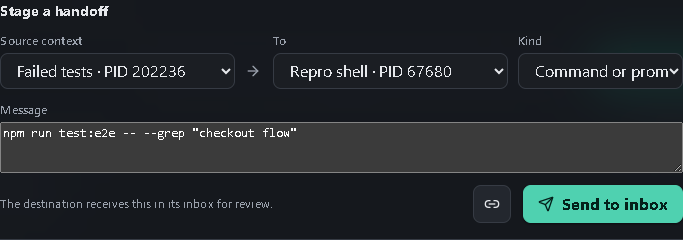
Use Text or summary when raw logs are too noisy. An API log terminal can tell a debugging shell: Checkout returns 500 after inventory reservation; request ID req-7f31. The request ID and failure stage survive as structured context without pasting a whole log stream.
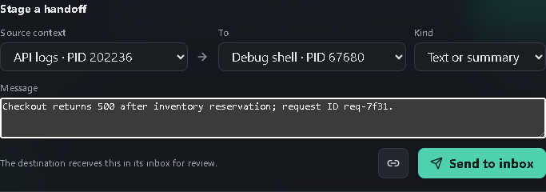
Use File or folder path for a trace, coverage report, build output, generated migration, or repository folder. A test runner can hand the investigation shell D:\shop-app\test-results\checkout-flow\trace.zip without risking shell metacharacters or accidental execution.
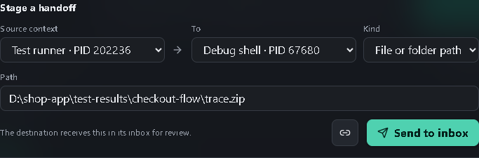
Use Status or readiness when one terminal is waiting on another service. An API terminal can announce ready with API listening on http://localhost:8000; migrations applied. The frontend developer immediately knows both the endpoint and the prerequisite state.
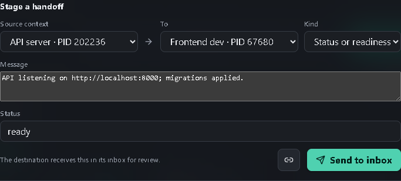
Use Task for a concrete assignment to another developer shell or agent: Investigate the flaky checkout test. Reproduce first; do not change authentication code. Including the constraint prevents a broad fix from drifting into security-sensitive code.
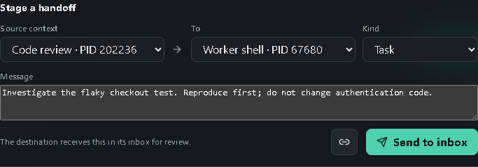
Use Result to close the loop. A worker can report Fixed a stale cart-state race; all 18 checkout tests pass. and attach D:\shop-app\src\checkout\cart-store.ts. The reviewing terminal gets both the conclusion and the file to inspect.
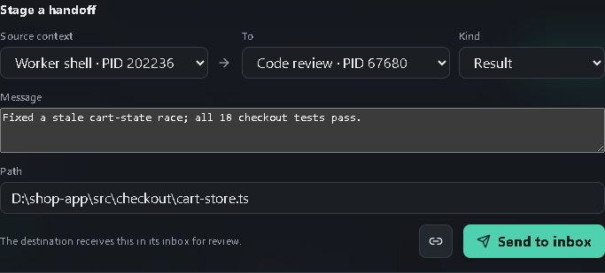
The receiver sees the source, destination, kind, timestamp, and literal payload together. Insert writes into the intended target without Enter; Dismiss removes the handoff without touching the terminal. This is the approval boundary that makes a handoff safer than remotely injecting input.
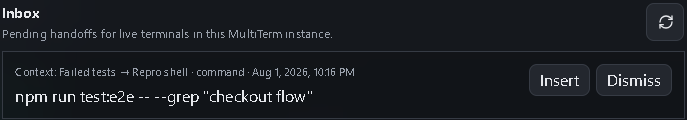
Pending handoffs draw a dashed amber circle-to-arrow connector from the selected source context to the target pane. The connector disappears when the handoff is inserted, dismissed, or expires. Multiple pending handoffs on the same route share one connector with a count.
For example, a command handed from Frontend dev to API server produces a temporary amber route while the API terminal still has an inbox item to review.
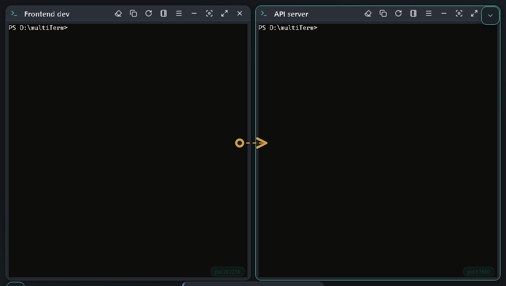
To keep a directional connection visible without sending a message, choose the source and target in Terminal messages, then select Link terminals. Explicit links use a solid cyan diamond-to-arrow connector. Remove one with Unlink in the Connections list. Links persist across reloads in the local browser profile, synchronize to other same-origin MultiTerm windows, and are removed when either terminal session ends. Workspace connectors appear only when both endpoint panes are visible; the dialog topology shows the current routes and provides the management controls.
A useful persistent link is Frontend dev to API server during feature work: it records the direction in which UI findings, endpoint questions, and reproduction commands normally travel without sending anything by itself.
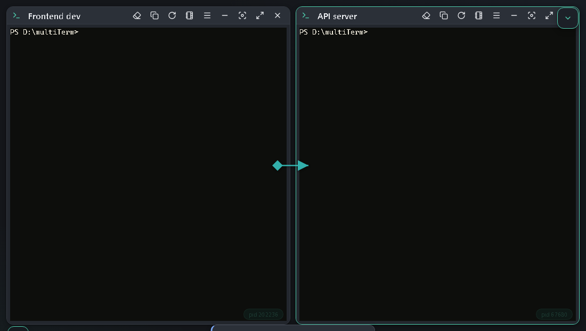
Hover or select a workspace connector to reveal Send message. This opens the handoff composer with that connector's source and destination already selected; the message still goes to the receiver's inbox and never executes automatically.
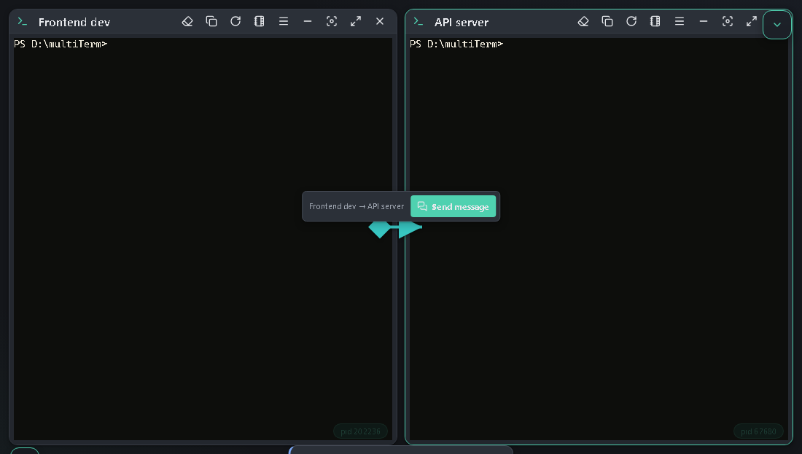
An explicit link is visual metadata only. It does not authenticate either terminal, grant shell access, deliver data, or run commands.
Press Ctrl+Shift+B to compose text once and send it to several terminals. Broadcast scope can target the current page or all pages. The Send Enter option controls whether the command runs immediately.
MultiTerm supports copy-on-select, Ctrl+Shift+C, Ctrl+Shift+V, optional Ctrl+V paste, right-click paste modes, and Copilot CLI clipboard cleanup. Copied File Explorer items are pasted as file paths. Images copied from tools such as Snipping Tool are saved temporarily as PNG files and pasted as paths so Copilot CLI can attach them as prompt context. Configure clipboard behaviors in Settings.
Choose Paste and execute directly below Paste in a terminal's right-click menu to paste clipboard text using terminal paste semantics and then press Enter. The blank-workspace right-click menu offers the same action. If no terminal has keyboard focus, MultiTerm opens one on the current page and runs the clipboard text after its shell is ready.
Choose Prepare and paste... to put clipboard text into the same preparation editor described below. Edit or validate it, then choose Paste to insert the result back into the terminal whose menu you opened. It uses terminal paste semantics and does not append Enter. Clipboard reading begins only after you choose the action, so opening the right-click menu stays on its fast synchronous path.
Select terminal output, right-click it, and choose Copy and prepare... to open the selected text in an editor before it reaches a file, the clipboard, or another terminal.
The editor opens with word wrap enabled and shows synchronized line numbers in its left gutter. Use the wrap toolbar button to keep long lines on screen or switch to horizontal scrolling. Use the eraser action to remove trailing Copilot TUI | borders from every affected line while preserving pipes inside commands. The editor also supports Tab/Shift+Tab indentation, find and replace, cursor and document statistics, and undo/redo.
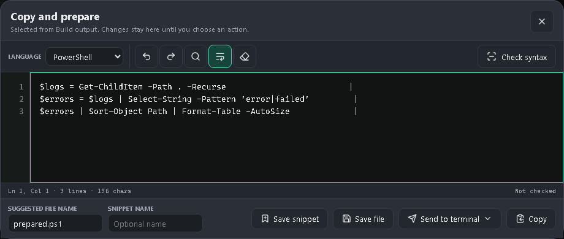
Choose PowerShell, Batch/cmd, C#, or plain text before selecting Check syntax. PowerShell uses the real PowerShell AST parser, C# uses the installed Windows C# compiler, and Batch performs non-executing structural checks for parentheses, quotes, and missing labels because cmd.exe has no safe parse-only mode. Select an issue location to move the editor cursor there.
After editing, choose one of these actions:
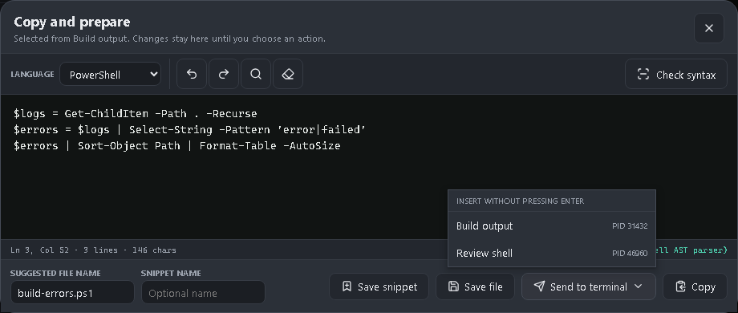
Open Terminal statistics... from a pane or All terminal statistics... from the workspace context menu. Statistics include session identity, PID, shell, uptime, rows and columns, input/output totals, and process resource information when available.
If an older installed bridge reports Unsupported message type: statistics, update MultiTerm so the UI and bridge versions match.
Open Analytics in Settings to see today's and all-time keystroke and focus totals plus a breakdown for each current terminal. Analytics persist across reloads and terminal reattachment. Reset clears both aggregate totals and current-terminal records after confirmation.
A keystroke is one physical keyboard event handled by xterm; pasted text, snippets, startup commands, broadcasts, and other automated input do not increase it. Focus time accrues only while a terminal input owns keyboard focus and the MultiTerm page is visible in the focused application window. It pauses when focus moves to settings, a dialog, another app, or a hidden tab.
Use Log to file... from a terminal context menu to capture output. Stop logging from the same menu, then use Reveal last log or Reveal log folder to locate the file.
Settings can notify you about terminal activity, inactivity, or the terminal bell. Browser notification permission may be required.
In the Electron desktop app, closing the window asks whether to:
Choosing Quit & close bridge warns that all associated terminal sessions and in-progress commands will end. MultiTerm first sends exit to each shell. A busy command that does not exit during the grace period receives terminal Ctrl+C, followed by another exit; force termination is the last resort. Tray Quit MultiTerm opens the same decision instead of bypassing it.
Setup offers the MultiTerm watchdog as a recommended optional task. It installs a lightweight per-user background agent that starts when you sign in, monitors every registered MultiTerm bridge, and detects bridges that are unresponsive or have live terminal sessions after their last app window disconnects. After a reconnect grace period, its decision dialog shows the affected bridge and active-session count. Keep terminals running is the safe default; Close bridge and terminals starts staged graceful shutdown. Keeping the bridge suppresses repeat prompts until a MultiTerm UI reconnects.
The watchdog is a per-user agent rather than a Windows Service because Windows services run in Session 0 and cannot safely display dialogs in the signed-in user's desktop session. It does not require administrator privileges. Its rotating diagnostic log is %LOCALAPPDATA%\MultiTerm\watchdog.log.
Windows does not provide one universal SIGTERM equivalent for arbitrary applications. For console sessions, MultiTerm uses terminal Ctrl+C (ETX, analogous to SIGINT) as the cooperative interrupt, together with the shell's exit command. On Linux, the graceful termination signal you may remember is usually SIGTERM.
The installer can add both:
Explorer integration is optional and unchecked by default. Enable it explicitly on the installer's Select Additional Tasks page. Folder, folder-background, and drive invocations are supported. If MultiTerm is already running, Explorer forwards the folder to a live instance.
The installer can also add MultiTerm commands to Visual Studio Code's Explorer. Right-click a file to open its containing folder, right-click a folder to open that folder, or use Open Workspace in MultiTerm from the Explorer when no resource is selected. The command reuses a live MultiTerm instance or starts one if necessary. For a nonstandard installation, set multiterm.launcherPath in VS Code.
The installer can optionally add MultiTerm's protected installation directory to the system PATH. After opening a new shell, run:
multiterm
multiterm "C:\src\my-project"Each normal installed, CLI, or taskbar launch requests an independent app instance with its own bridge port, browser profile, state record, and log. Multiple installed instances can therefore run concurrently.
Every settings group starts collapsed. Select a group header or its chevron to expand it. The search box remains at the top of the panel while you scroll and filters individual settings by labels, option names, descriptions, placeholders, control names, and related terminology. For example, tabs finds Pages location, macros finds Snippets, and projects finds Workspaces even when the typed word is not visible in the setting label. Multi-word searches may use related terms in any order. Matching groups expand temporarily; clearing the search restores the groups you had open before searching. Select Show all to clear any filter and expand every group; select Collapse all to close them again.
Settings cover:
Title size scales terminal-title text from 80% to 150% and defaults to 110%. Choose 100% to restore the original title size.
Changes are stored locally in the app's browser profile. Use Reset settings to return to defaults.
| Shortcut | Action |
|---|---|
| Ctrl+T | New terminal |
| Ctrl+P | New page |
| Ctrl+Shift+W | Close active terminal |
| Ctrl+Shift+R | Restart active terminal |
| Ctrl+Shift+X | Maximize or restore active pane |
| Ctrl+Shift+P / F1 | Command palette |
| Ctrl+Shift+Q | Dequeue next command |
| Alt+Q | Quick terminal switcher |
| Ctrl+F | Find in active terminal |
| Ctrl+Shift+F | Find in all terminals |
| Ctrl+Shift+B | Broadcast command |
| F11 / Esc | Enter fullscreen focus mode / exit and restore the previous UI |
| Ctrl+Shift+C | Copy |
| Ctrl+Shift+V | Paste |
| Ctrl+Shift+L | Clear active terminal |
| Ctrl+PageUp / Ctrl+PageDown | Previous or next page |
| Ctrl++ / Ctrl+- | Change default terminal font size |
| Ctrl+Alt++ / Ctrl+Alt+- / Ctrl+Alt+0 | Change or reset active-pane zoom |
| Ctrl+/ | Categorized keyboard-shortcut reference |
| Escape | Close the active dialog, menu, or search |
Open About MultiTerm from the header or command palette to see the running version, check for updates, open the latest release, or download the current installer. Automatic checks use the configured interval and never install an update without confirmation. Your update-check choice and interval are stored per user, survive upgrades, and are shared by concurrent MultiTerm instances; change them at any time in Session settings.
pwsh runs from a normal terminal.wsl --status and confirm a distribution is installed.The UI reconnects automatically when the local bridge restarts. If it remains disconnected, reopen MultiTerm and inspect the runtime logs. Source launches use the configured local bridge port; installed concurrent launches automatically claim available fallback ports.
multiterm is missingRun the installer again and select the corresponding optional task. Explorer integration is intentionally opt-in. PATH changes are visible only to shells opened after installation.
Use Fit all terminals, then Reset layout. If a manual layout is off-screen after a monitor change, switching to another layout and back also normalizes pane positions.
Open Runtime logs from the status bar and choose the appropriate severity. Include the MultiTerm version, shell type, and relevant log messages when reporting an issue.
MultiTerm serves its UI and terminal bridge on loopback only. Browser clients must pass exact Host and Origin checks; remote-mode flags and non-loopback bind hosts are refused. Notes, queues, settings, and workspace metadata are stored locally. Terminal commands and output are not sent to a remote MultiTerm service.
Electron opens only HTTPS external links. Updates must match the GitHub release asset's exact size and SHA-256 digest before launch; the maximum installer size is configurable under Performance. Installers are not yet Authenticode-signed, so verify the release source before approving an update.
Treat copied commands, scripts, Administrator terminals, Explorer extensions, and third-party CLIs with the same care you would use in a standalone terminal.